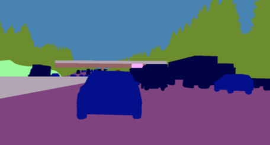

LIU, Fangchen (Catherine)
Senior Student
Computer Science Department,
Peking University
Haidian, Beijing, China
Email: liufangchen {at} pku.edu.cn
[My CV]

Bio
I am now a senior student in Peking University, majoring in Computer Science. In 2016, I joined the Institute of Digital Media at Peking University as a research assistant, and I am currently supervised by Prof. Yizhou Wang with honor. Piror to that, I was a researcher at SenseTime Group Limited, which is a leading artificial intelligence startup in China, working on face recognition with Dr. Yi Sun. I worked at Berkeley Artificial Intelligence Research as a visiting researcher, under the guidance of Prof. Trevor Darrell and Dr. Fisher Yu. We worked closely on autonomous driving and 3D reconstruction. Now, I also serve as a researcher at Microsoft Research Asia, Visual Computing Group, supervised by Dr. Bo Xin. Our work focuses on video game playing, which bridges computer vision to the fields of reinforcement learning and multi-agent systems.
My research interests mainly lie in computer vision, machine learning, multi-agent systems and their applications. To be specific, I am interested in exploring topics that can expand the horizons of the vision community, such as video game playing, multimodal computing and self-driving. Besides, I hope to apply my knowledge of reinforcement learning and multi-agent systems to robotics, and further investigate topics of human-robot interaction and multi-agent collaboration.
Education

Department of Computer Science, Peking University University
Sep. 2014 - June 2018 (Expected)Bachelor of Science
Electrical Engineering and Computer Science, University of California, Berkeley
June 2017 - Sep 2017Visiting Researcher
Publications
Anchored A3C: Transferring Computer Vision Wisdoms to Video Game Playing.
In Submission to CVPR, 2018.
A Driving Video Database with Scalable Annotation Tooling.
In Submission to CVPR, 2018.
Effective Master-Slave Communication On A Multi-Agent Deep Reinforcement Learning System.
Accepted to Hierachical Reinforcement Learning Workshop at NIPS, 2017.
Revisiting the Master-slave Architecture in Multi-agent Deep Reinforcement Learning.
In Submission to ICLR, 2018.
Since our CVPR 2018 Submissions are currently not available, if you want the full PDF, please contact me.
Research Projects

Learning to Select in StarCraft II Using A3C Agent with Multi-Scale Anchors, In submission to CVPR 2018
Fangchen Liu, Xiangyu Kong, Bo Xin, Yizhou Wang,
Sep. 2017 - Nov. 2017, Microsoft Research Asia,
We proposed an A3C agent to learn proper grouping policies with the capacities of both allocating armies and fighting against enemies. Inspired by some one-stage state-of-the-art detection methods, we developed multi-scale anchors to facilitate the selection process, which requires drawing a bounding box on the screen. Our model achieved much better performance when tested on StarCraft II mini-games.

{kind=link}
Large-Scale Driving Dataset with a Scalable Annotation System, In submission to CVPR 2018
Fisher Yu, Wenqi Xian, Fangchen Liu, Mike Liao, Vashisht Madhavan, Trevor Darrell,
June 2017 - Sep. 2017, University of California, Berkeley,
We implemented a scalable annotation system that can provide a comprehensive set of image labels for large-scale driving datasets and minimized its cost of time by interactive design and innovative features, and then demonstrated that object detection and segmentation models trained on our dataset are much unlikely to be surprised by new driving conditions.

Hierarchical Communication and Collaboration in Multi-Agent Reinforcement Learning, Accepted by Hierarchical RL Workshop in NIPS 2017, In submission to ICLR 2018
Xiangyu Kong, Bo Xin*, Fangchen Liu*, Yizhou Wang,
June 2017 - Sep. 2017, Peking University,
We proposed the master-slave architecture to combine the centralized perspective (the master) with the decentralized ones (the slaves), which is proved to be an effective communication mechanism which facilitate the interactive reinforcement learning process. The master agent aggregates messages uploaded from the slaves and generates unique message to each slave, while each slave incorporates both the master's instruction and its own decisions, and take actions to fulfill the goal. Our model achieved much better performance when tested on StarCraft environment and traffic junction task.
Work Experience
Research Intern, Visual Computing Group
Sep. 2017 - Present, Beijing, China
Worked on video game playing which bridges vision to reinforcement learning and multi-agent systems. Our work was submitted to CVPR 2018, wherein I served as the first author.
Research Intern, Face Detection and Recognition Group
Sep. 2016 - Mar. 2017, Beijing, China
Worked on Face Set Recognition and Memory Networks. Some results was integrated into the company's deep learning framework and products.